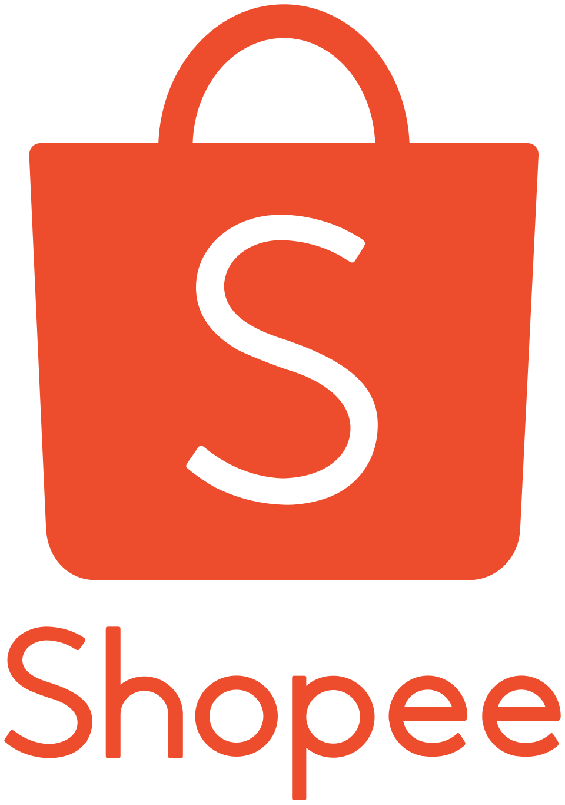

.png)
Integrantes
- Daniel Alves
- Peterson Henrique
- Ryan Cavalcante
Qual é o problema a ser resolvido?
Dificuldade de acessar produtos essenciais com confiança, organização e preços justos em ambientes com acesso limitado.
Benchmark

Este benchmark tem como objetivo analisar soluções já consolidadas no mercado de e-commerce, identificando boas práticas, falhas e oportunidades de melhoria que possam ser aplicadas no desenvolvimento do Projeto Mercado Preso.
Foram selecionadas as plataformas Amazon, Mercado Livre e Shopee por serem referências no setor, cada uma com estratégias, públicos e abordagens distintas. A análise busca compreender como essas soluções resolvem problemas semelhantes, permitindo a construção de um produto mais eficiente, acessível e competitivo.
Quem é o público-alvo das três concorrentes?
Amazon
A Amazon possui um público-alvo bastante amplo, abrangendo desde consumidores ocasionais até usuários frequentes que buscam conveniência, variedade e confiabilidade. A plataforma atrai especialmente pessoas que valorizam entrega rápida, produtos originais e uma experiência mais estruturada. Também é forte entre usuários com maior poder aquisitivo e clientes recorrentes (como assinantes do Prime), além de atender bem tanto B2C quanto pequenos vendedores no modelo marketplace.
Mercado Livre
O Mercado Livre tem forte presença na América Latina e se conecta principalmente com consumidores que buscam praticidade, rapidez na entrega e preços competitivos dentro de um ambiente confiável. Seu público inclui desde compradores mais casuais até usuários frequentes, com destaque para pessoas que já estão habituadas ao e-commerce regional. Também é bastante relevante para pequenos e médios empreendedores que utilizam a plataforma como canal principal de vendas.
Shopee
Já a Shopee foca mais intensamente em um público jovem e altamente sensível a preço. A plataforma atrai usuários que buscam promoções, cupons, gamificação e descoberta de produtos variados. É especialmente popular entre consumidores que priorizam economia e estão dispostos a explorar ofertas, mesmo que isso envolva maior variação de qualidade ou prazos de entrega mais longos.
Como as concorrentes se comportam em diferentes dispositivos (desktop/celular)?
Amazon
No desktop, a Amazon apresenta uma interface densa, com grande volume de informações visíveis logo na primeira tela. Há muitos banners, recomendações, categorias e ofertas simultâneas, o que pode gerar certa sobrecarga visual. No mobile, essa característica se intensifica: elementos grandes ocupam bastante espaço e a navegação passa a ser organizada em abas como início, conta, carrinho e menu. Apesar disso, mantém forte foco em produtos e conversão.
Mercado Livre
O Mercado Livre adota uma abordagem mais equilibrada no desktop, com layout limpo, espaçamento bem distribuído e separação clara entre categorias, ofertas e funcionalidades. No mobile, essa organização se mantém, com uma interface leve e intuitiva. As principais funções ficam acessíveis na barra inferior (início, categorias, carrinho, etc.), proporcionando uma experiência consistente e confortável entre dispositivos.
Shopee
Já a Shopee, no desktop, apresenta uma interface bastante voltada para promoções, com muitos produtos exibidos simultaneamente e forte apelo visual. No mobile, isso se traduz em um aplicativo fluido e otimizado, com navegação baseada em abas e foco em descoberta de ofertas. A experiência é claramente pensada para celular, priorizando dinamismo, gamificação e estímulos visuais constantes, mesmo que isso reduza a sensação de organização.
Quais são as funcionalidades demonstradas em cada uma das concorrentes?
Amazon

A Amazon apresenta funcionalidades mais tradicionais, como carrinho de compras e gerenciamento de endereço recurso que, diferentemente, não aparece de forma tão evidente na página inicial da Shopee. Além disso, a plataforma conta com uma categorização mais ampla e detalhada de produtos, facilitando a navegação e a busca por itens específicos.
Mercado Livre

Entre as funcionalidades presentes na plataforma, destaca-se, logo na tela inicial, a opção de adicionar o endereço do usuário. Isso permite que, ao acessar os produtos, já sejam exibidos valores de frete mais precisos. No mobile, há também a função de busca por imagem, facilitando a localização de itens semelhantes. Ademais, existe uma aba dedicada a vídeos de produtos, com um formato semelhante a “reels” ou “shorts”, tornando a navegação mais dinâmica e interativa.
Shopee

De modo geral, a Shopee adota uma abordagem mais agressiva em termos de vendas, oferecendo diversas funcionalidades voltadas a incentivar a compra. Entre elas, destacam-se roletas de descontos, sistema de pontos e forte ênfase em frete grátis. Uma funcionalidade relevante é o fácil acesso ao chat com os vendedores, o que facilita a comunicação e a negociação dentro da plataforma.
Como é o design das concorrentes?
Amazon

A Amazon apresenta uma paleta de cores predominantemente em azul (#146db3) e laranja (#ff6201). A maior parte dos menus está concentrada na parte superior do site, sendo visível à primeira vista, embora não ocupe o principal destaque da tela.
Mercado Livre

O Mercado Livre apresenta uma interface predominantemente amarela (#ffe700). Sua organização é mais limpa e espaçosa, tornando a navegação agradável à primeira vista.
Shopee

A Shopee apresenta uma interface predominantemente laranja (#ec4b2e). Diferentemente de outros sites, ela não disponibiliza a maior parte de suas funcionalidades logo na tela inicial. Nos espaços onde normalmente estariam essas funções, há principalmente botões que direcionam o usuário para ofertas.
Idioma da funcionalidade
Amazon
.jpeg)

O site oferece suporte a diversos idiomas, como inglês (EUA), alemão, espanhol, japonês, chinês, italiano, francês, catalão e, por fim, português. Apesar de abranger uma boa variedade de línguas, ainda não apresenta suporte para muitas línguas menos difundidas.
Mercado Livre

Por ser uma plataforma tipicamente voltada ao público da América Latina, o serviço funciona principalmente nessa região, oferecendo suporte aos idiomas oficiais de cada país, sendo o português, espanhol e inglês (Interface interna para vendedores globais). No entanto, o site não permite a troca de idioma de forma livre, sendo necessário acessar a plataforma correspondente à região desejada.
Shopee

A Shopee atua em quatro grandes mercados ao redor do mundo e oferece suporte aos idiomas de suas respectivas regiões, como inglês, chinês, malaio, espanhol, indonésio, tailandês, vietnamita, filipino e, por fim, português.
Os concorrentes possuem instruções de uso, canal de atendimento e/ou FAQ?
Amazon

A Amazon possui uma central de ajuda bastante robusta, com FAQ estruturado por temas e artigos explicativos detalhados. O acesso costuma ser feito pela seção “Ajuda” ou “Atendimento ao Cliente”, onde o usuário encontra soluções rápidas para problemas comuns, como pedidos, devoluções e pagamentos. Também, oferece suporte direto via chat, telefone e, em alguns casos, e-mail. A navegação é funcional, mas pode exigir alguns cliques até chegar ao atendimento humano.
Mercado Livre

O Mercado Livre também conta com uma central de ajuda bem organizada, com foco em resolver problemas sem necessidade de contato direto. O FAQ é adaptativo, guiando o usuário com base no tipo de problema selecionado. O atendimento pode ser feito via chat ou formulário, mas geralmente só é liberado após o usuário passar por algumas etapas automatizadas. A plataforma prioriza autonomia do usuário, reduzindo o contato direto sempre que possível.
Shopee

Já a Shopee oferece uma central de ajuda mais simplificada, com FAQ direto e linguagem acessível. O suporte ao cliente ocorre principalmente via chat dentro do aplicativo, com respostas automatizadas iniciais e possibilidade de contato humano. Comparado aos outros, o sistema é mais ágil e direto, mas menos aprofundado em termos de documentação e detalhamento de instruções.
Os concorrentes possuem alguma indicação de acessibilidade?
Amazon

A Amazon apresenta um nível alto de preocupação com acessibilidade, inclusive com uma página dedicada ao tema. A plataforma incorpora recursos como leitores de tela (VoiceView), navegação por voz, legendas automáticas, descrição em áudio e comandos por assistente virtual (Alexa). Somado a isso, há iniciativas voltadas para diferentes tipos de deficiência (visual, auditiva e motora), mostrando um posicionamento ativo e estratégico em acessibilidade.
Mercado Livre

O Mercado Livre não evidencia de forma tão explícita uma área dedicada à acessibilidade dentro da interface principal. No entanto, a plataforma tende a seguir padrões básicos de usabilidade (como navegação simplificada, boa hierarquia visual e adaptação mobile), o que contribui indiretamente para acessibilidade. Ainda assim, faltam sinais claros de recursos avançados ou comunicação explícita sobre o tema, como páginas institucionais ou funcionalidades destacadas.
Shopee

Já a Shopee também não apresenta, de forma evidente, uma seção dedicada à acessibilidade ou recursos avançados amplamente comunicados. A experiência prioriza agilidade e estímulos visuais (promoções, banners e produtos), o que pode até dificultar a navegação para alguns perfis de usuários. Assim como no Mercado Livre, a acessibilidade parece estar mais implícita em padrões básicos de interface do que em uma estratégia clara e comunicada.
pontos positivos e negativos
Amazon
A Amazon apresenta como principal ponto positivo a robustez do atendimento e da central de ajuda, com grande volume de informações e múltiplos canais de suporte. Bem como, transmite alta confiança ao usuário, com políticas claras e experiência consolidada. Por outro lado, a interface pode ser considerada poluída e com excesso de informação, o que dificulta a navegação em alguns casos percepção também relatada por usuários, que apontam problemas em organização e filtros.
Mercado Livre
O Mercado Livre se destaca pela logística eficiente e pela estrutura consolidada no Brasil, sendo muitas vezes associado a rapidez na entrega e praticidade. Como ponto negativo, há críticas relacionadas ao atendimento e à experiência recente de entrega, além de etapas mais burocráticas em alguns processos (como validações e suporte), o que pode gerar fricção para o usuário.
Shopee
Já a Shopee tem como ponto forte o apelo promocional e a facilidade de navegação voltada para descoberta de produtos, com foco em preços baixos e alto volume de ofertas. Isso torna a experiência mais dinâmica e atrativa, especialmente para um público jovem. Em contrapartida, a forte concorrência por preço e a percepção de menor confiabilidade em alguns produtos podem impactar a confiança do usuário e a qualidade percebida.
⚖️ O que faremos igual vs diferente
O que faremos igual
Interface simples e intuitiva, com navegação por categorias bem definidas (inspirado no Mercado Livre), uso de carrinho de compras, exibição clara de preços e integração de funcionalidades básicas de e-commerce como busca e filtros.
O que faremos diferente
Foco em uma experiência limpa e objetiva, evitando excesso de informações e poluição visual (como na Amazon), maior transparência nos produtos e vendedores (reduzindo desconfiança comum na Shopee), e comunicação mais direta e acessível com suporte ao usuário.